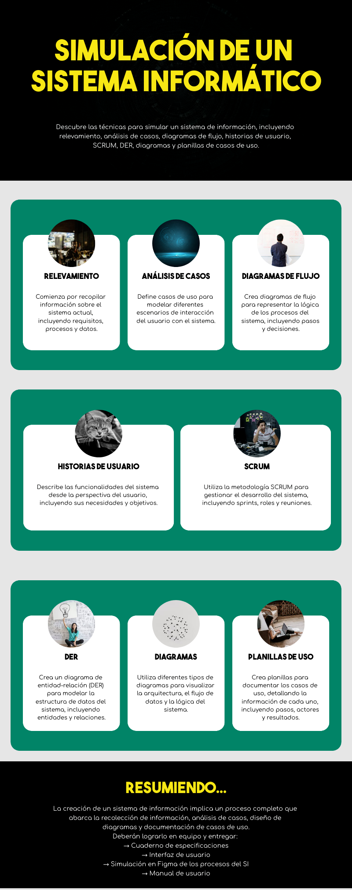
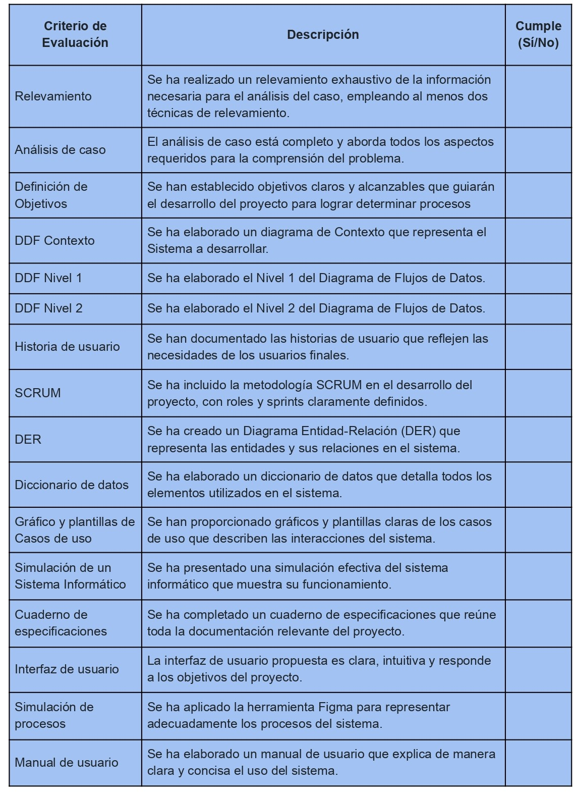
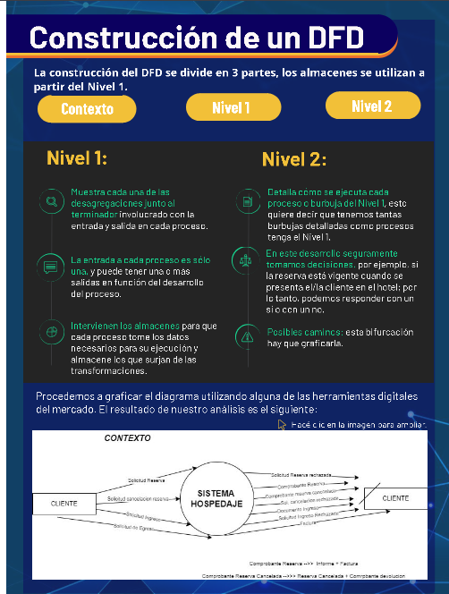
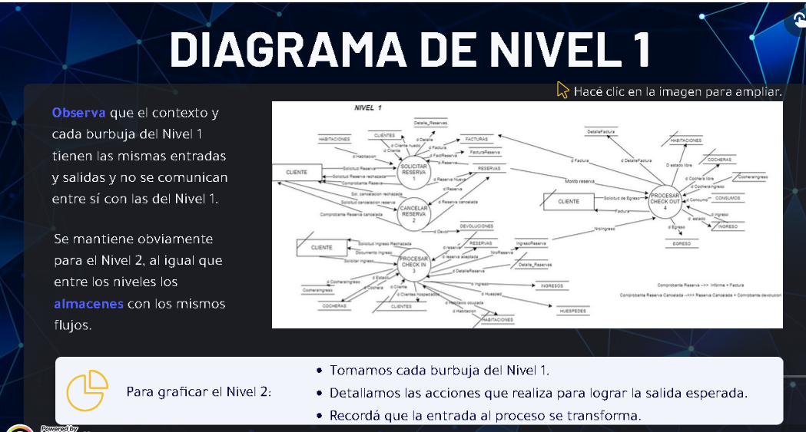
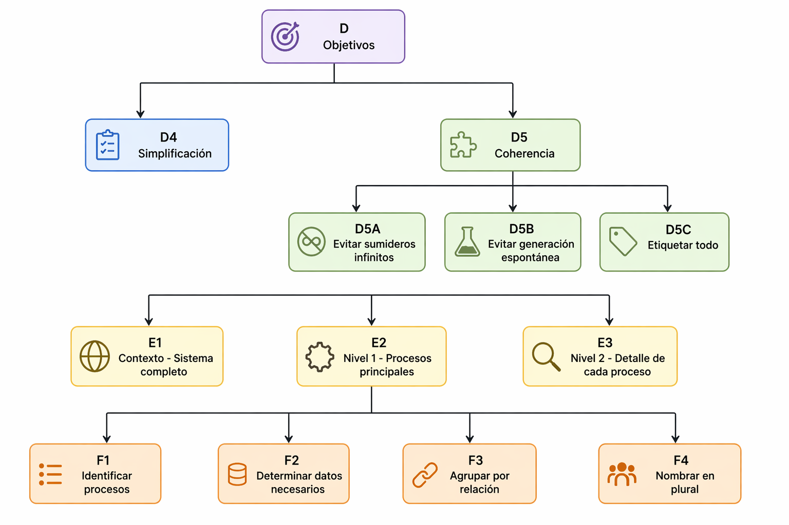
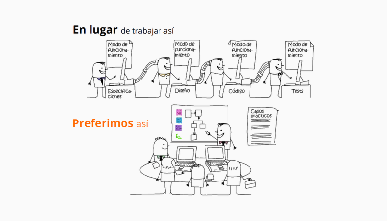

Practica profesional II
Recursos
Link carpeta compartida: https://drive.google.com/drive/folders/1Bk50lhUOYjtEt5ZabE1BjXpu0W9Go7xt
Navegacion:
-
Desarrollo (lo que antes era el libro)
-
Oficina de practicas: es lo que tenemos que hacer
-
Lo mismo que se tiene arriba, se tiene abajo
Apertura
-
Lo mas importante:
-
Apertura
-
Cronograma
-
-
¿Cómo está organizada PP2? Sus Objetivos
La asignatura está dividida en 16 semanas, en 4 etapas unidades:
-
"Preliminar"
-
"Análisis"
-
"Simulación del SI"
-
"Implementación"
Se Realizarán un proyecto Integrador a partir de los contenidos dictados con una primer entrega en la Semana 7 y una final en la Semana 13. A continuación verán una infografía y una rúbrica con los objetivos a desarrollar en la materia


contacto profesora: silvia.canizares@bue.edu.ar
Semana 1
🧠 Introducción
En esta semana se aborda el desarrollo de sistemas orientados a la gestión y apoyo a la toma de decisiones, enfocándose en las técnicas de relevamiento de información, sus tipos y la documentación de los datos obtenidos.
El relevamiento es una etapa clave para comprender las necesidades del cliente y construir soluciones adecuadas.
🔎 ¿Qué es el relevamiento?
Un relevamiento es un estudio sistemático y organizado sobre un tema, centrado en el cliente y sus necesidades.
Cuando un cliente solicita un sistema, inicialmente brinda una idea general. El relevamiento permite profundizar en esa idea para obtener información relevante que el cliente puede no considerar importante.
Ejemplos de preguntas: - ¿Qué tipo de actividad desarrolla el cliente? - ¿Qué información necesita? - ¿Cómo gestiona su stock o procesos?
El objetivo es lograr una solución adecuada y pertinente.
🎯 Necesidades del cliente
Un buen relevamiento implica: - Identificar necesidades reales - Comprender el contexto del cliente - Analizar las razones detrás de sus decisiones - Determinar el público objetivo
Esto permite adaptar la solución y generar valor diferencial.
⚙️ ¿Cómo se prepara un relevamiento?
Para realizar un relevamiento efectivo:
-
Indagar en organizaciones similares para obtener contexto
-
Analizar la información recopilada
-
Identificar y describir el entorno y actores
-
Llevar la información a un plano práctico según el cliente
🧩 Tipos de relevamiento
Existen distintas técnicas para recolectar información:
🗣️ Entrevista
Es la principal herramienta de relevamiento.
Permite obtener: - Necesidades - Responsabilidades - Objetivos - Procesos - Estructuras organizacionales
Momentos de la entrevista: - Antes → preparación - Durante → ejecución - Después → análisis
Importante: El éxito depende de la experiencia y preparación del entrevistador.
📝 Cuestionarios
Se utilizan cuando: - Se requiere información concreta - Hay gran cantidad de personas
Características: - Formatos estandarizados - Preguntas claras - Difícil observar reacciones
Ventajas: - Escalabilidad - Recolección masiva de datos
Condición clave: - Comprensión y honestidad de las respuestas
❓ Tipos de preguntas
-
Abiertas → permiten respuestas amplias
-
Cerradas → respuestas limitadas (sí/no, opciones)
-
Semiabiertas → combinan ambas
-
En batería → conjunto de preguntas relacionadas
-
De evaluación → valoran opiniones o situaciones
-
Motivadoras → fomentan la participación
👀 Observación y participación
Permite obtener información difícil de conseguir por otros medios.
Se observa: - Condiciones de trabajo - Organización del espacio - Interacción del personal - Procesos reales
Consideraciones: - A veces no se puede participar, pero sí observar - No intervenir, solo registrar información - Participar si es posible para enriquecer el análisis
📂 Examen de documentos
Permite obtener información cuantitativa:
-
Volúmenes
-
Frecuencias
-
Tendencias
También ayuda a entender: - Normas - Procedimientos - Políticas organizacionales
Sirve para validar información obtenida en entrevistas o cuestionarios.
📄 Informe del primer contacto
Luego del relevamiento se debe documentar la información.
Debe incluir: - Datos de la persona relevada (nombre y puesto) - Lugar y fecha - Breve historia de la organización - Técnica utilizada (entrevista, encuesta, etc.) - Resultados obtenidos
Importante: No omitir información relevante, ya que será clave para definir objetivos del sistema.
🧠 Tips para la actividad
Para un relevamiento exitoso:
-
Investigar previamente el entorno
-
Establecer un primer contacto con responsables de decisión
-
Organizar la información recolectada
-
Definir la estrategia de relevamiento
-
Diseñar preguntas y estructura de entrevistas/cuestionarios
📌 Idea clave
"El relevamiento de información es la base para desarrollar sistemas que realmente respondan a las necesidades del cliente y apoyen la toma de decisiones."
📌 Mapa mental
graph TD A[Relevamiento de información] --> B[Objetivo] A --> C[Preparación] A --> D[Técnicas] A --> E[Informe] B --> B1[Entender cliente] B --> B2[Detectar necesidades] B --> B3[Apoyar decisiones] C --> C1[Indagar contexto] C --> C2[Analizar información] C --> C3[Identificar actores] C --> C4[Aplicar al caso] D --> D1[Entrevista] D --> D2[Cuestionarios] D --> D3[Observación] D --> D4[Documentos] D --> D5[Tipos de preguntas] D1 --> D1A[Antes] D1 --> D1B[Durante] D1 --> D1C[Después] D2 --> D2A[Datos masivos] D2 --> D2B[Formato estructurado] D3 --> D3A[Procesos reales] D3 --> D3B[Sin intervención] D4 --> D4A[Datos cuantitativos] D4 --> D4B[Normas y procesos] D5 --> D5A[Abiertas] D5 --> D5B[Cerradas] D5 --> D5C[Mixtas] E --> E1[Datos del cliente] E --> E2[Contexto] E --> E3[Técnica usada] E --> E4[Resultados] A --> F[Clave] F --> F1[Base del sistema] F --> F2[Evita errores]
Semana 2
¿Qué es el método de caso?
En esta semana comenzamos trabajando con un caso práctico, para poder aplicar las técnicas vistas anteriormente y empezar a desarrollar nuestro proyecto.
El método de caso es una forma de enseñanza en la que los estudiantes aprenden a partir de situaciones reales o similares a la vida real. Esto permite que cada uno construya su propio aprendizaje en un contexto cercano a lo que ocurre en la práctica.
Se basa principalmente en:
-
La participación activa de los estudiantes.
-
El trabajo colaborativo.
-
El diálogo como herramienta para analizar y tomar decisiones.
Definición
El Método de Caso (MdC) es una estrategia de enseñanza donde se presentan situaciones reales para que los estudiantes las analicen, discutan y propongan soluciones.
Este método busca que el aprendizaje no sea solo teórico, sino también práctico y aplicado.
Origen
El método de caso se originó en la Universidad de Harvard, alrededor del año 1914.
Fue utilizado inicialmente en la enseñanza del Derecho, con el objetivo de que los estudiantes:
-
Analicen situaciones reales.
-
Tomen decisiones.
-
Evalúen diferentes acciones.
-
Fundamenten sus opiniones.
Dimensiones fundamentales del MdC
Existen tres aspectos clave dentro del método de caso:
-
Participación activa
El estudiante debe involucrarse directamente en el análisis del caso. -
Trabajo en equipo
Es importante colaborar con otros compañeros para enriquecer las ideas. -
Diálogo y discusión
El intercambio de opiniones es fundamental para llegar a conclusiones y tomar decisiones.
Objetivos del método de caso
El uso de esta técnica tiene varios objetivos importantes:
1. Formación profesional
Preparar a los estudiantes para que puedan resolver problemas reales de manera adecuada, teniendo en cuenta el contexto social, humano y legal.
2. Enfoque en problemas reales
Trabajar con situaciones que pueden ser confusas o complejas, como ocurre en la vida real.
Esto implica:
-
Analizar el problema.
-
Compararlo con la teoría.
-
Identificar sus particularidades.
-
Proponer soluciones.
-
Evaluar resultados.
3. Construcción del conocimiento
Generar un aprendizaje más profundo mediante:
-
La discusión.
-
La explicación de ideas.
-
El intercambio de opiniones.
-
La revisión y mejora de los conocimientos.
¿Qué permite construir un buen caso?
Pertinencia de un MdC
La construcción de un buen caso parte del principio de pertinencia. Para ello es necesario considerar las siguientes características:
-
Se basa en casos reales.
-
Su objetivo es aumentar la motivación hacia el tema de estudio mediante la aplicación práctica.
-
Aumenta la seguridad y autoestima al poner en práctica lo aprendido.
-
Un buen caso no tiene un solo tema ni una única solución.
-
No ejemplifica ni sirve por sí mismo como base para generalizar.
-
No muestra una acción correcta o incorrecta, sino que sirve como base para discutir y reflexionar de forma objetiva y constructiva sobre situaciones concretas.
Tipos de enfoque de los casos
Los casos se pueden centrar en:
-
Estudio de descripciones.
-
Resolución de problemas. Por Ejemplo: La toma de decisiones o simulaciones.
-
Casos centrados en la aplicación de principios. Por ejemplo: Es decir, aquellos que favorecen el desarrollo del pensamiento deductivo, partiendo de lo general hacia conclusiones específicas.
Características de un buen caso
Entonces, el caso es una construcción didáctica que:
-
Debe ser real o verosímil (los casos inventados suelen desmotivar).
-
Debe generar acción y producir resultados.
-
Debe incluir los elementos necesarios para comprender la situación a resolver.
-
Debe estar vinculado a un ámbito profesional, disciplinar o territorial específico, para lograr mayor involucramiento.
Otros criterios
También se deben tener en cuenta los siguientes aspectos:
-
El modelo seguido.
-
La estructura.
-
El carácter temático o integral (puede ser interdisciplinario).
-
El propósito explícito.
-
Otros criterios adicionales.
¿Qué es necesario definir para construir un buen caso?
Al momento de armar un buen caso, es necesario partir de una pregunta orientadora simple:
¿Este caso sirve?
A partir de este interrogante, se deben considerar los siguientes principios:
Principios a tener en cuenta
-
Pertinencia
El caso debe ser adecuado al objetivo de aprendizaje. También llamado “ajuste”, para lograr que la cuestión analizada se vincule con los conocimientos en desarrollo. -
Relevancia
Debe ser significativo e importante para quien lo analiza. También llamado interés. Debe atrapar el interés inmediato de los/las estudiantes. -
Disponibilidad / acceso a la información
Se debe contar con la información necesaria para poder trabajar el caso. Esto es crítico, ya que si no se cuenta con datos suficientes, no es posible escribir el caso y, de este modo, es mejor abandonarlo. -
Potencialidad
Debe permitir el análisis, la reflexión y distintas posibles soluciones. Posibilita los logros previstos. -
Estilo
La forma en que se presenta debe ser clara y comprensible. Debe ser atractivo (cualquiera sea el soporte). -
Originalidad
Debe aportar algo distinto o interesante que motive el análisis. Aún cuando se trate de una situación clásica, el planteo que se destaque por su novedad y distinción. -
Adecuación
Debe estar adaptado al nivel y contexto de los estudiantes. El caso debe estar pensado para que un grupo en particular pueda trabajarlo. Por lo que debe considerarse el perfil y características del destinatario. -
Tiempos
Debe poder resolverse dentro del tiempo disponible. La resolución del problema que presente el caso debe realizarle en un período de tiempo que permita poner en juego los aprendizajes y evidencie el avance en las posibles soluciones.
Análisis del entorno de estudio
Fase preliminar
En esta fase se realiza la lectura del caso hasta comprenderlo completamente (las veces que sea necesario). Es importante analizarlo desde diferentes perspectivas para entender bien la situación planteada.
Fase de expresión de opiniones y juicios
En esta etapa el trabajo es individual. Es un momento para reflexionar sobre lo que ocurre en el caso, por qué sucede y qué variables intervienen.
Fase de contraste
En esta fase se da el diálogo grupal. Los integrantes se reúnen para compartir sus ideas, compararlas y construir un análisis conjunto.
Dependiendo de la cantidad de personas, se pueden formar grupos más pequeños para facilitar el intercambio. Este proceso enriquece el debate y debe estar guiado por un mediador o docente que oriente, organice y promueva nuevas preguntas.
Fase de reflexión teórica
En la etapa final, se vuelve al trabajo en grupo reducido para redactar un informe con el análisis del caso.
El trabajo grupal es fundamental en esta metodología, ya que implica debatir, defender, ajustar y negociar ideas. Esto permite enriquecer el aprendizaje a partir del intercambio con los demás.
👀¿Qué se requiere para analizar un caso?
Pasos para analizar un caso
La riqueza de esta herramienta se obtiene del análisis de las interacciones entre los integrantes de los grupos. Por eso es importante seguir estos pasos:
-
Identificación
Leé y buscá comprender el caso para identificar el problema o situación planteada. -
Recopilación
Reuní todos los datos relevantes disponibles (documentos, informes, entrevistas, evidencia, etc.). -
Análisis
Preguntate qué información brinda el caso y qué problema presenta. Examiná y procesá los datos. -
Búsqueda de soluciones
Desde distintas perspectivas, proponé posibles soluciones. -
Evaluación
Analizá las ventajas y desventajas de cada solución y sus posibles efectos. -
Toma de decisiones
Elegí la mejor alternativa en base al análisis realizado. -
Elaboración de argumentos
Justificá tu decisión con argumentos sólidos. -
Implementación
Definí acciones concretas (por ejemplo, asignar tareas o armar un plan de acción). -
Seguimiento
Evaluá los resultados obtenidos y realizá ajustes si es necesario. -
Comunicación
Mantené un diálogo fluido con las partes involucradas. -
Documentación
Registrá todo el proceso: datos, decisiones y acciones realizadas.
Caso Chrysler y método de análisis de casos
Resumen del caso Chrysler
El caso muestra cómo Chrysler logró recuperarse de una crisis enfocándose en el cliente mediante investigación de mercado.
-
Reestructuró la empresa en equipos interdisciplinarios
-
Incorporó la opinión del cliente desde el diseño (encuestas, grupos foco, pruebas)
-
Analizó la competencia y el comportamiento postventa
-
Mejoró calidad, costos y tiempos de desarrollo
Sin embargo, el principal problema fue un exceso de enfoque en la investigación, descuidando:
-
Producción
-
Competencia
-
Producto final
Esto generó productos poco competitivos, lentitud en el mercado y finalmente una crisis.
Relación con el método de análisis de casos
1. Identificación
El problema principal es el desequilibrio entre investigación y ejecución.
2. Recopilación
Se utilizaron datos de clientes: encuestas, entrevistas, pruebas de producto.
3. Análisis
La estrategia estaba centrada en el cliente, pero ignoró variables clave como tiempos, competencia y calidad final.
4. Búsqueda de soluciones
-
Reducir la investigación excesiva
-
Equilibrar con producción y análisis del mercado
5. Evaluación
Ventajas: - Mejor conocimiento del cliente
Desventajas: - Costos elevados - Procesos lentos
6. Toma de decisiones
Aplicar una investigación más eficiente y balanceada.
7. Elaboración de argumentos
Escuchar al cliente no es suficiente si no se logra un buen producto final.
8. Implementación
Optimizar procesos internos y tiempos de desarrollo.
9. Seguimiento
Evaluar resultados en el mercado y ajustar estrategias.
Conclusión
El caso Chrysler demuestra que una estrategia bien orientada puede fallar si no se equilibra correctamente.
El método de análisis de casos permite: - Detectar problemas - Evaluar decisiones - Proponer mejoras
Es clave considerar todas las variables del contexto, no solo una.
Caso a analizar clinica SePrise. Historia del cliente
-
1940 - Fundación: La clínica SePrise fue fundada el 25 de abril de 1940 por los doctores Enrique Seprok y Luis Primak, en su ubicación actual de Av. Lezama.
-
1942 - Inauguración:
-
En 1942 se construyó el edificio actual que constaba de:
-
36 habitaciones simples
-
2 quirófanos
-
1 sala de partos
-
5 pisos
-
-
A su inauguración asistieron autoridades nacionales y figuras de la sociedad.
-
La clínica nace como una maternidad.
-
-
1947 - Innovación:
-
Centro de formación médica en múltiples especialidades.
-
Incorporación de equipo de Rayos X (tecnología avanzada para la época).
-
-
1957 - Venta: El doctor Seprok vende la clínica a un grupo de más de 20 médicos que continúan su desarrollo.
-
2010 - Nuevo edificio:
-
Nuevo edificio de 12 plantas.
-
Integración con edificio histórico.
-
Modernización tecnológica.
-
-
2023 - Excelencia:
-
Ampliación y modernización continua.
-
Incorporación de equipamiento de última tecnología.
-
Mejora en cantidad y calidad de servicios.
-
Institucional
Quiénes somos
Clínica SePrise, fundada en 1940, ubicada en Av. Lezama.
Nuestra clínica
-
Amplia gama de servicios de calidad.
-
Equipamiento médico de alta tecnología.
-
Ambiente confortable y renovado.
Además
-
Profesionales de reconocida trayectoria.
-
Enfoque en el cuidado del paciente y su familia.
-
Respeto por normas éticas.
-
160 camas de internación.
Misión
-
Brindar servicios y asistencia médica.
-
Garantizar atención personalizada.
-
Asegurar calidad médica y ética profesional.
Propósitos
-
Ser la elección de los pacientes.
-
Destacarse en calidad médica y humana.
-
Mantener alto estándar de confort y tecnología.
Recursos Humanos
-
Profesionales
-
Técnicos/as
-
Auxiliares
Equipo altamente capacitado para:
-
Internación
-
Servicios ambulatorios
Servicios
La clínica ofrece:
-
Consultorios externos
-
Internación
-
Estudios
-
Guardia médica
-
Enfermería
-
Nutrición
-
Farmacia e insumos
Proyecto
La clínica busca implementar una plataforma moderna para gestionar:
-
Consultorios externos
-
Circuito de estudios
Circuito: Consultorios Externos
Objetivo del sistema
El sistema de salud debe garantizar:
-
Servicios accesibles y equitativos
-
Nivel profesional óptimo
-
Planificación, evaluación y mejora continua
El sistema se caracteriza por la calidad.
Proceso administrativo de atención ambulatoria
Etapas:
-
Gestión de turnos
-
Asignación de turnos
-
Asignación de recursos (médicos, espacios, insumos)
-
Recepción de pacientes
-
Atención del paciente
-
Finalización de atención
-
Liquidación de honorarios
Gestión de turnos
El personal administrativo accede a la agenda con:
-
Disponibilidad de profesionales
-
Espacios físicos
-
Horarios
Toma de turnos
Formas:
-
Presencial: el paciente se presenta en el centro
-
Telefónica: mediante call center
Acreditación de turno
Al llegar, el paciente:
-
Acredita identidad
-
Indica modalidad de pago:
-
Obra social
-
Particular
-
Espera
El paciente:
-
Se dirige a la sala de espera
-
Aguarda ser llamado
Llamado al consultorio
Puede ser realizado por:
-
Médico
-
Personal administrativo
Atención médica
El médico:
-
Accede a la información del paciente
-
Consulta historia clínica si es necesario
-
Registra la atención
Si el paciente no está registrado:
-
Se lo busca por:
-
Nombre y apellido
-
Número de identificación
-
Nuevos turnos
Si se requiere seguimiento:
-
Se asigna un nuevo turno
Armado de agenda
Se consideran:
-
Disponibilidad de profesionales
-
Recursos
-
Horarios
Circuito: Estudios
Definición
Se consideran estudios todas las prestaciones destinadas a diagnosticar problemas de salud.
Proceso administrativo
Incluye:
-
Gestión de agenda (si aplica)
-
Asignación de turnos
-
Administración de insumos
-
Recepción de pacientes
-
Gestión de estudios desde guardia o internación
Consideraciones
-
La mayoría de los estudios requieren turno
-
Excepciones:
-
Laboratorio
-
Estudios de guardia o internación
-
-
Los horarios están definidos en la agenda
Toma de turnos
Igual que consultorios:
-
Presencial
-
Telefónico
Acreditación
El paciente:
-
Verifica identidad
-
Define modalidad de pago
Estudios de laboratorio
-
Atención por orden de llegada
-
Horarios:
-
07:00 a 11:00 → estudios con ayuno
-
07:00 a 17:00 → estudios sin ayuno
-
Sala de espera
El paciente espera ser atendido.
Atención
El paciente:
-
Realiza el estudio
-
Recibe comprobante de retiro
Gestión de insumos
-
Control permanente de stock
-
Reposición continua
Semana 3
Introducción
Una vez identificado y analizado el caso a estudiar, debemos aplicar alguna de las técnicas de relevamiento —como la entrevista y la encuesta— para la búsqueda de información.
Mediante un ejemplo podrás ver cómo podemos obtener la información que necesitamos para armar el objetivo y los sub-objetivos de un proyecto. De esta manera nos queda definido cada uno de los procesos que se analizarán en el futuro.
Es importante considerar que para el ejemplo deberás redactar primero la historia del caso y luego las rutinas relacionadas con las actividades.
Además, de describir los circuitos informatizados que van a dar origen al objetivo, conociendo a partir de estas necesidades los requerimientos de nuestro/a cliente.
¡Comencemos!
Caso modelo: Hotel Newton Palace
Nuestra historia
En 1968 los hermanos Londra iniciaron un proyecto de fundar un hotel en el centro de la ciudad de Necochea, sobre la concurrida Avenida 2. La idea era visionaria pues sería el primer hotel en Necochea para recibir a turistas y extranjeros/as que aún no habían llegado.
La idea era construir un hotel con una hermosa vista al mar, con una infraestructura de 4 niveles que incluiría más de 50 habitaciones. En 1970 se recibieron los/las primeros/as huéspedes y en 1971 se inauguró formalmente, albergando a grandes figuras.
El nombre de Hotel Newton Palace proviene del físico y matemático Isaac Newton, persona admirada por los hermanos Londra. En 1982 fue reconocido como uno de los mejores hoteles de Necochea por su gran servicio y variedad.
Objetivos
¿Cómo realizar objetivos en un proyecto?
Posteriormente, con toda la información que obtuvimos, se define el objetivo.
Características
-
El objetivo de un proyecto podemos definirlo como el fin al que se desea llegar o la meta que se pretende lograr.
-
Este debe ser único, abstracto, cuantificable y realizarlo con los medios económicos mínimos.
-
El objetivo se debe desagregar, es decir dividirlo en pequeños objetivos, para comprender cada uno de los procesos involucrados.
-
Cada parte representa un sub-objetivo con las características propias de cualquier objetivo.
Teniendo en claro lo expresado anteriormente, procedemos a definir el objetivo de los requerimientos del caso del hotel Newton Palace relacionado a la ocupación de las instalaciones del hotel.
Observamos que para ocupar una habitación podemos reservarla con anterioridad, y al momento de ingresar, realizar el check in y cuando nos retiramos el check out. Esto nos da idea de tres acciones diferentes que, a su vez, son independientes entre sí, por eso podemos pensarlo como partes o desagregaciones del objetivo principal.
Luego del análisis realizado, definimos el objetivo y sus desagregaciones de la siguiente manera:
-
Procesar reserva
-
Procesar check-in
-
Procesar check-out
Objetivo principal:
-
Administrar y gestionar la ocupación de las instalaciones
Documentación del objetivo con sus desagregaciones y límite
Ya tenemos nuestro objetivo: "Administrar y gestionar la ocupación de las instalaciones" y sus desagregaciones.
Es importante ahora definir el límite para dejar en claro desde dónde y hasta dónde abarca la resolución de los procesos.
En este ejemplo podemos considerar, como límite, desde que un/a huésped solicita la contratación de una habitación hasta que se efectiviza el retiro del establecimiento.
Contamos con los siguientes procesos:
-
Reserva
-
Check in
-
Check out
En tal sentido, partimos de la idea de que contamos con toda la información del relevamiento, es decir, tenemos realizados los cuestionarios y hemos ampliado nuestra información mediante las respuestas brindadas por integrantes del hotel. A partir de esto, procedemos a redactar cómo son los procesos, teniendo en cuenta que pueden sufrir variaciones cuando los cotejamos con el/la cliente.
Fase de reserva
-
La reserva se realiza con una anticipación de 6 meses y la forma puede ser telefónica o presencial.
-
Esta reserva se puede cancelar.
-
Si la cancelación es antes de la semana al ingreso, se devuelve el monto de reserva.
-
Si la cancelación es faltando 6 días, y hasta 48 hs antes la devolución es del 75%, y si es después de las 48 hs no hay devolución de dinero.
Estas acciones nos indican que el proceso, a su vez, se subdivide en solicitar la reserva y cancelar la reserva.
Proceso de check in
-
Al momento de ingresar al hotel, se verifica si tiene reserva previa o es un ingreso espontáneo.
-
Se completan las fichas de ingreso de los/las huéspedes y se tilda a la o las habitaciones como ocupadas.
-
El/la titular o responsable del ingreso debe dejar los datos de una tarjeta de crédito como garantía de pago.
-
La reserva puede indicar también el uso de cochera y, si este fuera el caso, se indica el número de cochera destinada para el/la huésped y se procede a deshabilitar la cochera por el tiempo de estadía.
Proceso de check out
-
Al momento del egreso del hotel, se verifica si tiene consumos de habitación y si tiene uso de cochera.
-
Se calculan, en caso afirmativo, los montos a cobrar.
-
Luego se realiza la facturación correspondiente descontando, si fuera el caso, el monto de reserva.
-
Una vez realizado el check out, se habilita la habitación y, si tenía uso de cochera, el espacio que ocupaba el vehículo.
Relevamiento
¿Cómo aplicar técnicas de relevamiento de información?
Como primer paso a seguir, comenzamos a buscar la información para satisfacer el requerimiento del/la cliente.
Podemos utilizar cualquiera de las herramientas de relevamiento: entrevista, cuestionario u observación directa.
A continuación, retomaremos el caso del Hotel Newton Palace para trabajar un ejemplo de entrevista y de cuestionario.
¿Cómo aplicar la técnica de entrevista?
La entrevista se realiza en el horario de la mañana, alejada del inicio de actividades y del almuerzo. Nos alistamos conociendo la historia del hotel, cuáles fueron sus orígenes y cómo se llevan a cabo los circuitos en la regla de negocios hotelera del mercado.
Como establece la técnica de la entrevista, contamos con un bloc de notas para registrar la conversación.
Finalizada la entrevista procedemos a documentarla.
Aquí podés ver un modelo de cómo queda formada la estructura que venimos estudiando:
Entrevista: Hotel New Palace
-
Hoy, 2 de diciembre del 2022, comenzamos la entrevista con el encargado del hotel Newton Palace, Sr Olmos Miguel, a las 09:00 hs.
Concluida la charla, recabamos la siguiente información:
-
Categorización de habitaciones y servicios
-
El hotel cuenta con habitaciones estándar y premium, esta categorización se ve reflejada en los precios y en los servicios propios del cuarto.
-
Los precios y servicios de cada tipo de habitación varían.
-
Ofrece alquiler de bicicletas y estacionamiento.
-
La reserva de estacionamiento es necesaria en temporada alta debido a la concurrencia de turistas.
-
-
Recepción y horarios
-
Personal en la recepción disponible las 24 horas.
-
Check-in y check-out en horarios programados.
-
-
Servicios de desayuno
-
Horario de 08:00 a 11:00 en el salón comedor.
-
Desayuno estilo continental de libre demanda.
-
Servicio de habitación disponible.
-
-
Servicios adicionales
-
Servicio de cunas disponible sin cargo.
-
Política de cancelación: 48 horas de antelación para reembolso parcial.
-
-
Necesidad de una aplicación
-
El sector administrativo busca una aplicación para gestionar la estadía de los huéspedes.
-
Se desea informatizar los circuitos de reservas, ingresos, egresos y facturación.
-
Concluida la entrevista, se pactó la entrega de un cuestionario para que lo responda el personal que diariamente realiza esas actividades.
¿Cómo realizar un cuestionario?
Concluida la entrevista, tenemos en claro cuáles son los circuitos que corresponden a los requerimientos del/la cliente. Con la información resultante, con la observación que hicimos al concurrir al lugar y con la investigación realizada sobre la regla de negocios hotelera, estamos en condiciones de crear el cuestionario.
A continuación te proponemos una serie de preguntas que consolidan el cuestionario que precisás llevar a cabo:
-
¿Cómo se realiza la reserva?
-
¿Cuáles son los pasos a seguir para cancelar la reserva?
-
¿Cuáles son los medios de pago?
-
¿Existen descuentos por pago en efectivo?
-
¿Cuándo se puede realizar la cancelación de la reserva? ¿Y qué sucede cuando se realiza en el tiempo estimado?
-
¿La cochera tiene costo adicional por día? ¿Cuenta con tarifas por temporada?
-
¿Cómo se registra el ingreso de los/las huéspedes? ¿Qué datos son fundamentales?
-
Los consumos realizados en la habitación ¿se abonan en el momento o se cargan en la cuenta del/la responsable del hospedaje?
-
¿El/la titular del hospedaje deja los datos de una tarjeta como garantía de pago?
-
Si el/la huésped no desea la limpieza de la habitación, ¿cómo se procede?
Semana 4: Diagramas de Flujo de Datos (DFD)
Introducción
Este recorrido busca, ante todo, que puedas profundizar en los diagramas de flujo de datos (DFD). Aquellos que se utilizaron por primera vez en la ingeniería de software como notación para el estudio del diseño de sistemas.
-
¿Qué son? ¿Cómo se componen? ¿Cuáles son sus reglas?
-
¿Qué es un almacén de datos?
-
¿Cómo se construyen?
Estos interrogantes se irán resolviendo a medida que avances por cada capítulo y subcapítulo de este material de lectura.
Definición
DFD: concepto
Un diagrama de flujo de datos (DFD) es una herramienta de modelado de los procesos funcionales de un sistema.
Este diagrama se caracteriza por ser una gráfica que se entiende con solo mirarla, su notación es sencilla y clara y, en cierto sentido, intuitiva. Además, permite representar gráficamente los límites del sistema y la lógica de los procesos, estableciendo qué funciones hay que desarrollar. También, muestra el flujo o movimiento de los datos a través del sistema y sus transformaciones como resultado de la ejecución de los procesos.
Esta técnica consiste en la descomposición sucesiva de los procesos, desde un nivel general, hasta llegar al nivel de detalle necesario para reflejar toda la semántica que debe soportar el sistema en estudio.
Para construir el diagrama, nos valemos de los siguientes elementos:
-
El proceso
-
El flujo
-
El almacén de datos
-
El terminador
Componentes de un DFD
Proceso
Se representa gráficamente con un círculo, según Yourdon. Hay otros analistas que utilizan óvalo o rectángulo con esquinas redondeadas.
Muestra una parte del sistema que transforma entradas en salidas. Puede recibir el nombre de burbuja, función o transformación.
Recibe el nombre en base a la acción: verbo (infinitivo) + sustantivo (objeto). Por ejemplo: "Procesar Inscripción", "Procesar Venta".
Lleva numeración acorde al nivel de la gráfica:
-
Nivel 1: un número entero (1, 2, 3…)
-
Nivel 2: formado por:
-
El número de la burbuja del nivel anterior
-
Un punto
-
Otro número entero (indica la secuencialidad de las acciones)
-
Ejemplo: 1.1, 1.2, 2.1, 2.2…
-
Flujo
Representa datos en movimiento. La flecha muestra la dirección: según donde apunta, indica si la información está en movimiento hacia adentro o hacia afuera de un proceso.
Este elemento se representa con una flecha que entra o sale de un proceso, describiendo el movimiento de paquetes de información de una parte del sistema a otra.
Todo flujo debe llevar una leyenda que indique qué datos transporta o qué comunicación lleva entre procesos y almacenes.
Un flujo de datos entre dos procesos solo es posible cuando la información es sincrónica, es decir, el proceso destino comienza cuando el proceso origen finaliza su función.
Almacén
Se utiliza para modelar una colección de datos que están en reposo. Se grafica con dos líneas paralelas y su nombre es el plural del paquete de datos que representa.
El almacén no puede crear, transformar o destruir datos. No puede estar comunicado con otro almacén o entidad externa, y aparecerá por primera vez en aquel nivel en que dos o más procesos accedan a él.
Los flujos conectados a un almacén solo pueden transportar paquetes de información que el almacén sea capaz de guardar.
Tipos de flujos en almacenes
-
De actualización: representan la alteración de los datos de un almacén como consecuencia de la creación de un nuevo elemento, por eliminación o modificación de otros ya existentes.
-
De consulta: representan la utilización de los valores de uno o más campos de un almacén o la comprobación de que los valores de los campos seleccionados cumplen unos criterios determinados.
Terminador
Representa un agente externo al sistema que proporciona o recibe información del mismo. Puede hacer referencia a departamentos, personas, máquinas, recursos u otros sistemas.
Se representa con un rectángulo. Puede aparecer varias veces en un mismo diagrama, así como en los distintos niveles del DFD, para mejorar la claridad del diagrama.
El estudio de las relaciones entre entidades externas no forma parte del modelo.
Reglas para construir un DFD
La construcción del DFD sigue las siguientes reglas:
-
Denominación: se escoge un nombre con significado para los procesos, flujos, almacenes y terminadores.
-
Enumeración: se enumeran los procesos.
-
Rediseño: se redibuja el DFD tantas veces como sea necesario.
-
Simplificación: se evitan los DFD excesivamente complejos.
-
Coherencia: se asegura la consistencia interna.
Errores a evitar
-
Sumideros infinitos: burbujas que tienen entradas pero no tienen salidas.
-
Burbujas de generación espontánea: aquellas que tienen salidas sin tener entradas.
-
Flujos y procesos no etiquetados.
-
Almacenes que sean de "solo lectura" o "solo escritura", salvo que lo requiera el análisis.
Estructura de niveles
La gráfica comienza con el contexto, que nos muestra el sistema completo con los terminadores y representa el objetivo general del sistema.
Luego, se grafica el Nivel 1 con cada uno de los procesos que contiene el sistema. Cada uno de estos procesos lleva una numeración diferente y se utiliza en el Nivel 2 cuando se detallan los pasos del proceso.
Los almacenes aparecen recién a partir del Nivel 1, ya que los procesos necesitan de sus datos para transformar las entradas que reciben.
Cuando se repite un terminador o un almacén, la gráfica lleva en el extremo superior izquierdo una línea para indicar que se trata del mismo terminador o almacén.
Ejemplo: Almacenes de datos del sistema de hospedaje
¿A qué nos referimos con almacenes de datos?
Los almacenes de datos son una parte importante para la construcción de la gráfica, ya que los procesos deben buscar los datos necesarios para ejecutar sus acciones en función del flujo que reciben para devolverlo transformado.
Vamos a seguir con el ejemplo del Hotel Newton Palace, que estudiamos en la semana 3, para crear nuestros almacenes.
Lo primero es identificar los procesos que surgieron después de desagregar el objetivo, que en nuestro caso resultaron ser reserva, check in y check out.
Entonces, debemos contar con datos de:
-
¿Quién hace reserva?
-
¿Qué tipo de reserva?
-
Cantidad de tiempo de hospedaje.
-
Ingreso al hotel (día y horario).
-
Egreso al hotel (fecha y hora).
Agrupamos los datos por su relación y le colocamos un nombre; ese nombre en plural es el que representa a cada uno de los almacenes del modelo.
Almacenes identificados
| Nombre | Contenido |
|---|---|
Cliente |
Nro de cliente - Nombre - Apellido - Documento - Teléfono - Domicilio - e-mail |
Habitación |
Nro de habitación - Nombre - Descripción - Precio por día - Ocupada (sí/no) |
Reserva |
Nro de reserva - Cliente - Fecha de reserva - Fecha de ingreso - Fecha de egreso - Monto - Estado |
Detalle de la reserva |
Nro de reserva - Nro de habitación |
Factura |
Nro de factura - Cliente - Fecha - Monto final - Reserva (sí/no) |
Detalle de la factura |
Nro de detalle - Nro de factura - Descripción - Monto |
Factura de la reserva |
Nro de factura - Nro de reserva |
Ingreso |
Nro de ingreso - Cliente - Fecha - Hora - Cantidad de huéspedes - Cochera (sí/no) - Reserva (sí/no) - Estado |
Ingreso de reserva |
Nro de ingreso - Nro de reserva |
Huésped |
Nro de huésped - Nro de ingreso - Nro de cliente |
Consumo |
Nro de consumo - Nro de ingreso - Descripción - Monto |
Cochera |
Nro de cochera - Ubicación - Estado |
Cochera de ingreso |
Nro de ingreso - Nro de cochera - Fecha |
Egreso |
Nro de egreso - Nro de ingreso - Fecha - Monto final |
Devolución |
Nro de devolución - Nro de reserva - Fecha de devolución - Monto |
Construcción del DFD: Niveles

Diagrama de contexto
El diagrama de contexto muestra el sistema como una única burbuja con los terminadores (entidades externas) y los flujos de entrada y salida. Representa el objetivo general del sistema.
Para el caso del Hotel Newton Palace, el diagrama de contexto sería:
-
Burbuja central: "Administrar y gestionar la ocupación de las instalaciones"
-
Terminador: Huésped
-
Flujos de entrada: solicitud de reserva, datos de ingreso, solicitud de egreso
-
Flujos de salida: confirmación de reserva, comprobante de ingreso, factura
El contexto y cada burbuja del Nivel 1 tienen las mismas entradas y salidas. Es decir, todo lo que entra y sale del sistema en el contexto, se distribuye entre los procesos del Nivel 1.
Diagrama de Nivel 1
Tomamos la burbuja del contexto y la expandimos mostrando los procesos internos, los almacenes de datos y los flujos entre ellos. Para el Nivel 1, cada proceso lleva un número entero (1, 2, 3…).
En el caso del Hotel Newton Palace, los procesos del Nivel 1 son:
-
Procesar reserva
-
Procesar check-in
-
Procesar check-out
Estos procesos se comunican entre sí a través de los almacenes de datos (Clientes, Habitaciones, Reservas, etc.) y no directamente entre ellos, salvo que la información sea sincrónica.

Diagrama de Nivel 2
Para graficar el Nivel 2:
-
Tomamos cada burbuja del Nivel 1.
-
Detallamos las acciones que hacía para lograr la salida esperada.
Ejemplo: Nivel 2 - "Solicitar reserva"
El diagrama del Nivel 2 para solicitar la reserva del Hotel Newton Palace funciona de esta manera:
-
Solicitud de reserva: el huésped realiza la solicitud.
-
Disponibilidad: se verifica si hay habitaciones disponibles.
-
Si hay disponibilidad: se procede al registro.
-
Si no hay disponibilidad: se informa al huésped.
-
Registro: se registra la reserva con los datos del huésped y la habitación.
-
Facturación: se genera la factura correspondiente a la reserva.
Mapa mental: Diagramas de Flujo de Datos

Semana 5 - Scrum
Introduccion
Durante esta semana se trabaja el enfoque de las metodologias agiles, especialmente Scrum, como marco de trabajo para organizar y desarrollar productos de manera iterativa e incremental.
Scrum parte de la idea de que no siempre es posible definir todo al comienzo con total certeza. Por eso propone ciclos cortos de trabajo, entregas frecuentes, revision constante y capacidad de adaptacion frente a cambios.
En este enfoque se prioriza:
-
Las personas y sus interacciones
-
El producto funcionando
-
La colaboracion con el cliente o usuario
-
La respuesta al cambio
¿Que caracteriza a Scrum?
A partir de los aportes de Sutherland y de su adopcion en distintos contextos de trabajo, Scrum se consolida a partir de las siguientes caracteristicas:
-
Enfoque en la forma en que la gente trabaja: Scrum se diferencia de los enfoques de planificacion en cascada porque se centra en la realidad de como trabajan las personas, y no en como deberian trabajar en teoria.
-
Ciclos de trabajo breves: utiliza ciclos cortos llamados Sprints, en los que el equipo desarrolla un conjunto de tareas definidas y al final obtiene una mejora del producto que puede mostrarse.
-
Inspeccion y adaptacion: promueve revisiones frecuentes para verificar si el trabajo avanza en la direccion correcta y para realizar ajustes cuando sea necesario.
-
Trabajo en equipo: pone el foco en la colaboracion continua entre las personas involucradas en el desarrollo.
Enfoque de trabajo en Scrum
En los enfoques tradicionales, el trabajo suele organizarse en etapas separadas y sucesivas. Scrum, en cambio, propone un trabajo colaborativo, iterativo y con retroalimentacion permanente.

En lugar de dividir estrictamente el trabajo en analisis, diseño, desarrollo y pruebas como compartimentos aislados, Scrum favorece:
-
Trabajo simultaneo entre integrantes del equipo
-
Colaboracion permanente
-
Feedback continuo
-
Revision y mejora iterativa
Este enfoque permite adaptarse con mayor rapidez y entregar valor de manera incremental.
Historia de usuario
Las historias de usuario son una forma de documentar necesidades o funcionalidades desde el punto de vista del usuario.
Su construccion no consiste solamente en escribir una frase corta. Implica comprender que necesita el usuario, que valor espera obtener y como se registra esa necesidad dentro del trabajo del equipo.
Para construir historias de usuario se consideran aspectos como:
-
El trabajo colaborativo entre quienes participan del proyecto
-
La intervencion del Product Owner en la definicion de prioridades
-
La comprension de las necesidades del usuario
-
La organizacion del trabajo dentro del Product Backlog
-
La identificacion clara del rol involucrado
-
La posibilidad de ajustar o refinar historias
-
La definicion de criterios de aceptacion
-
La descripcion del contexto, el evento y el resultado esperado
Registro de la documentacion
Una historia de usuario puede registrarse con campos como los siguientes:
| Campo | Descripcion |
|---|---|
ID |
Identificador de la historia de usuario |
Rol |
Tipo de usuario o actor que realiza la accion |
Caracteristica / Funcionalidad |
Accion, necesidad o funcionalidad que requiere el usuario |
Razon / Resultado |
Beneficio, finalidad o resultado esperado |
N° de escenario |
Cantidad o numero de escenario contemplado |
Criterio de aceptacion |
Condicion que debe cumplirse para considerar valido el escenario |
Contexto |
Situacion previa o estado en el que se encuentra el sistema o proceso |
Evento |
Accion o hecho que desencadena el comportamiento esperado |
Resultado / Comportamiento esperado |
Respuesta o efecto esperado del sistema |
Ejemplo de historia de usuario (Sistema de hospedaje)
A continuacion se presenta un ejemplo desarrollado con varias historias de usuario vinculadas al sistema de hospedaje.
| ID | Rol | Caracteristicas / Funcionalidad | Razon / Resultado | N° de Escenario | Criterio de Aceptacion | Contexto | Evento | Resultado / Comportamiento esperado |
|---|---|---|---|---|---|---|---|---|
1 |
Recepcion |
Reservar en un periodo determinado habitaciones para una cantidad especifica de huespedes |
Reserva de hospedaje |
1 |
Existen habitaciones para el registro de hospedaje |
Cuando existen habitaciones que satisfagan la solicitud de reserva |
Busqueda de habitaciones disponibles destinadas a hospedaje |
Comprobante de reserva |
2 |
No existen habitaciones para el registro de hospedaje |
Cuando no son suficientes las habitaciones que satisfagan la solicitud de reserva |
Cancelacion de la solicitud de reserva |
|||||
2 |
Recepcion |
Cancelar el comprobante de reserva |
Anulacion de reserva |
1 |
Reserva vigente |
Cuando la reserva esta dentro del periodo de vigencia, pudiendo tener devolucion de su valor |
Validar vigencia de la reserva |
Comprobante de reserva cancelada |
2 |
Reserva vencida |
Cuando el plazo de vigencia de la reserva esta vencido |
Rechazo de la cancelacion de reserva |
|||||
3 |
Recepcion |
Ingreso al hotel |
Registro de huespedes al hotel |
1 |
Con reserva |
Cuando existe reserva previa al ingreso |
Busqueda de habitaciones disponibles destinadas a hospedaje |
Documentacion de ingreso |
2 |
Con habitacion disponible |
Cuando no son suficientes las habitaciones que satisfagan la solicitud de reserva |
Busqueda de habitaciones disponibles destinadas a hospedaje |
Rechazo de la solicitud de ingreso |
||||
3 |
Sin habitacion disponible |
Cuando no existe reserva previa al ingreso, y no cuenta con habitaciones disponibles |
Rechazo de la solicitud de ingreso |
|||||
4 |
Recepcion |
Egreso del hotel |
Registro de la salida de los huespedes |
1 |
Existencia de ficha de ingreso |
Cuando existe registro de huespedes y/o consumos extras al hotel |
Busqueda de ficha de ingreso |
Factura con detalle |
Sprint Planning
El Sprint Planning es la reunion en la que se planifica el trabajo del Sprint.
En esta instancia el equipo define que se va a realizar durante el ciclo, que objetivo se busca alcanzar y como se organizara el trabajo.
Durante esta planificacion se trabaja sobre:
-
El objetivo del Sprint
-
Las historias o elementos seleccionados desde el backlog
-
La estimacion del trabajo
-
La organizacion del Sprint Backlog
Participan habitualmente:
-
Product Owner
-
Scrum Master
-
Equipo de desarrollo
Como resultado de esta reunion se obtiene un Sprint Backlog con el trabajo comprometido para el Sprint.
Scrum explicado con analogia de Formula 1
Una forma simple de comprender Scrum es compararlo con la dinamica de una carrera de Formula 1.
1. Planificacion del Sprint
Antes de comenzar la carrera, el equipo analiza condiciones, define estrategia y establece un objetivo.
En Scrum, esto equivale a decidir que trabajo se hara durante el Sprint y como se intentara alcanzar el objetivo.
2. Sprint
La carrera en si representa el Sprint.
Durante este periodo el equipo trabaja para desarrollar el producto o una mejora del mismo.
3. Daily Scrum
Asi como durante una carrera puede haber chequeos rapidos o ajustes de estrategia, en Scrum existe una reunion diaria breve para revisar:
-
Que se hizo
-
Que se hara
-
Que impedimentos existen
4. Sprint Review
Al finalizar la carrera se analiza el resultado.
En Scrum, la Sprint Review permite mostrar lo realizado, revisar el incremento obtenido y recibir devoluciones.
5. Sprint Retrospective
Luego de la carrera se reflexiona sobre el proceso.
En Scrum, la retrospectiva busca identificar que funciono bien, que problemas hubo y que puede mejorarse en el siguiente Sprint.
Componentes de Scrum
Roles
Scrum define distintos roles dentro del equipo de trabajo.
Product Owner
-
Representa la vision del producto
-
Define prioridades
-
Gestiona el Product Backlog
-
Ordena el trabajo segun valor y necesidad
Scrum Master
-
Facilita la aplicacion de Scrum
-
Ayuda a que el equipo respete el marco de trabajo
-
Colabora en la eliminacion de impedimentos
-
Promueve la mejora continua
Equipo de desarrollo
-
Construye el producto
-
Organiza el trabajo tecnico
-
Transforma requerimientos en incrementos funcionales
-
Se autogestiona para cumplir el objetivo del Sprint
Stakeholders
-
Son las personas interesadas en el producto
-
Pueden aportar informacion, necesidades y retroalimentacion
-
Observan los resultados y brindan devoluciones utiles para la evolucion del producto
Artefactos
Los artefactos de Scrum permiten organizar y visibilizar el trabajo.
Product Backlog
-
Es la lista priorizada de requerimientos, necesidades, mejoras o funcionalidades del producto
-
Se actualiza y refina segun evolucionan las necesidades
Sprint Backlog
-
Es el conjunto de elementos seleccionados del Product Backlog para un Sprint
-
Representa el trabajo concreto comprometido por el equipo para ese ciclo
Incremento
-
Es el resultado funcional obtenido al finalizar un Sprint
-
Debe aportar valor y encontrarse en condiciones de ser revisado
Eventos
Scrum organiza su funcionamiento a traves de eventos definidos:
-
Sprint
-
Sprint Planning
-
Daily Scrum
-
Sprint Review
-
Sprint Retrospective
Estos eventos estructuran el trabajo y permiten planificar, ejecutar, revisar y mejorar de forma continua.
Proceso general
El flujo general de Scrum puede entenderse de la siguiente manera:
-
Product Backlog
-
Sprint Planning
-
Sprint
-
Incremento
-
Sprint Review
-
Sprint Retrospective
-
Repeticion del ciclo
Se trata de un proceso iterativo que vuelve a comenzar, incorporando en cada vuelta lo aprendido en la anterior.
¿Como comenzar con Scrum?
Para comenzar a trabajar con Scrum no alcanza con adoptar nombres o reuniones. Es necesario comprender la situacion de partida de la organizacion y preparar el terreno para el cambio.
Algunos aspectos a considerar son:
-
Analizar como trabaja actualmente la organizacion
-
Comprender los procesos existentes
-
Evaluar el nivel de calidad actual
-
Detectar obstaculos, problemas o limitaciones
Ademas, es necesario:
-
Definir roles
-
Identificar recursos disponibles
-
Formar equipos de trabajo
-
Establecer objetivos claros
-
Acordar una forma de trabajo compartida
La implementacion de Scrum implica tanto una organizacion del trabajo como una forma de pensar la colaboracion y la mejora continua.
Cierre
Scrum es un marco de trabajo agil que permite organizar el desarrollo de productos de forma iterativa, colaborativa y adaptable.
Su valor principal radica en:
-
Entregar valor en ciclos cortos
-
Revisar frecuentemente el resultado
-
Ajustarse a cambios
-
Aprender en cada iteracion
-
Mejorar tanto el producto como el proceso
Mas que una secuencia rigida de pasos, Scrum propone una dinamica de trabajo enfocada en las personas, la colaboracion y la mejora continua.